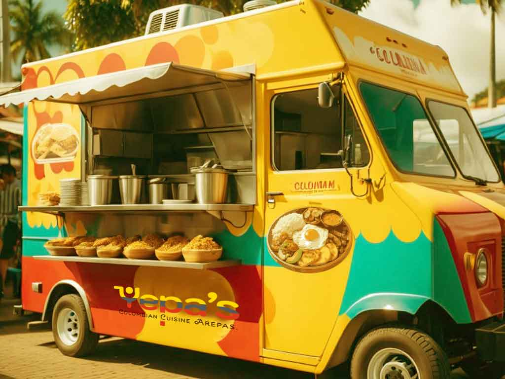

ABOUT YEPA'S

Yepa’s
began as a food truck in 2021 the heart of
Downtown Miami. After three years of success, we
established a brick & mortar location
In the Famous Art Distric in 2025.
It's not a bad deal at all for $10: Choice of 2 of 3
internationally-styled sliders, soda and fries. The
trio offered: American (American cheese, bacon);
Italian (mozzarella cheese, basil, tomato); and French
(brie, honey, chopped almonds). I chose the first two,
both fat, juicy, and pretty tasty. Fries were cooked
in less-than-fresh oil. Soda was cold. There are
better burgers around but not many better deals.
But why doesn't The Latin House Grill offer some
sort of Latin burger? Not enough Hispanics in
Miami? While they're at it, they might consider
posting some sort of menu, too. A lot of folks
left because they couldn't figure out what was
being served.
Another night, another meals-on-wheels spectacle.
This one took place last evening behind the Publix
at Biscayne Boulevard and 47th Street -- a temporary
move from 81st Street due to some hiccup that is
apparently being solved. The crowds were thin
relative to recent round-ups, perhaps due to the
air having a bit of nip to it; plus I left before
8 p.m., so maybe things got busier later on. What
follows are photos of some of the foods sampled,
with quick impressions of each. It's not good
enough to be photo journalism, but how about we
call it photo blogism?